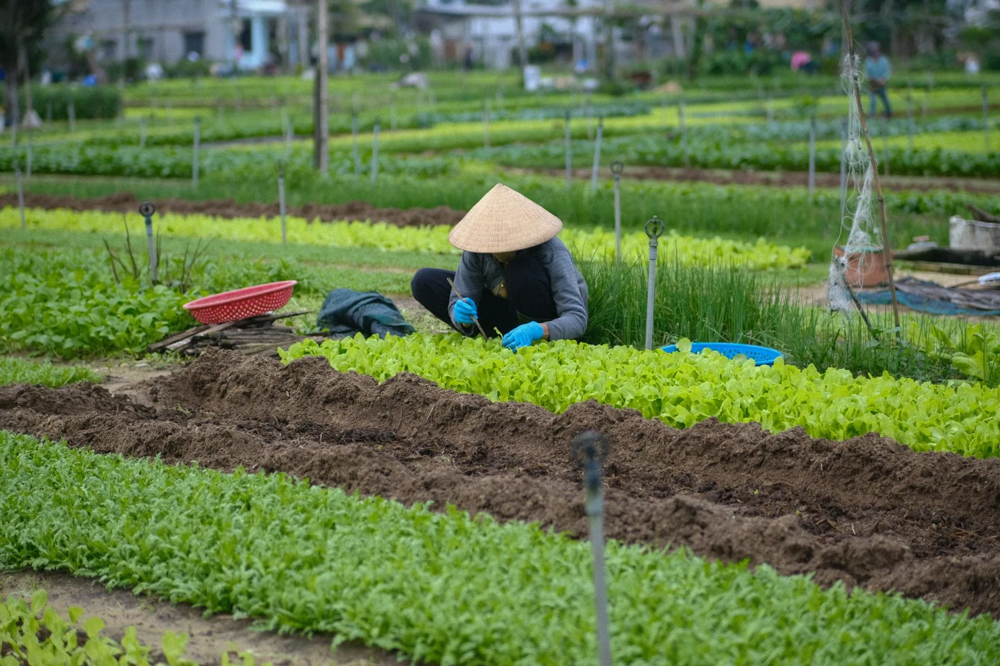
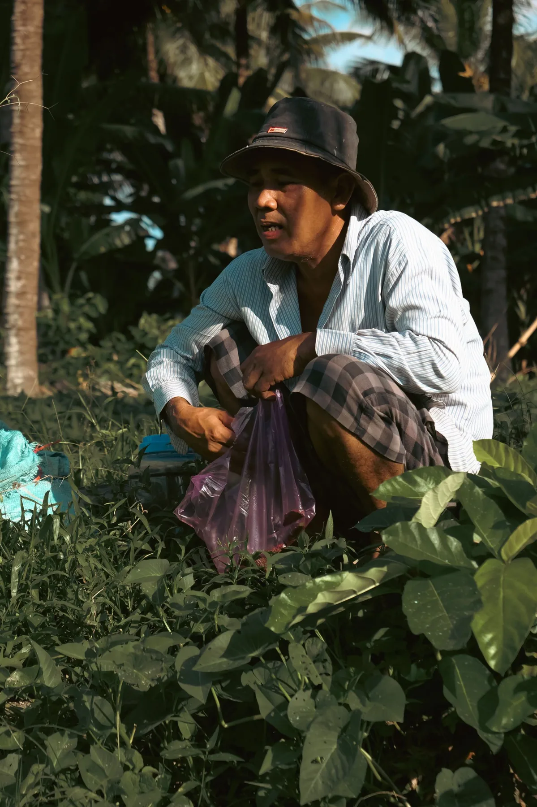

Khỏi vừa cân,
vừa cộng sổ.
Nhập số ký từng bao trên điện thoại. Cân Tất cộng tổng, trừ bì và tính thành tiền khi có giá.
Cân Tất · App ghi phiếu cân cho thương lái và vựa
Anh lo thu mua, Cân Tất phụ chuyện sổ sách.
Cộng số ký, trừ bì, tính tiền rồi gửi phiếu qua Zalo cho bà con xem và xác nhận.
Đang chuẩn bị ra mắt trên iPhone

Đà Nẵng · Ảnh: Nhà văn / Pexels
 ruộng.
ruộng.Mỗi bao rau là công sức của bà con.
Ghi cho đủ, tính cho rõ, để hai bên yên tâm.
Nhập số ký từng bao trên điện thoại. Cân Tất cộng tổng, trừ bì và tính thành tiền khi có giá.
Phiếu được lưu ngay trên máy. Có mạng trở lại thì đồng bộ, anh không cần chờ để cân tiếp.
Một link qua Zalo là xem được phiếu. Đúng thì Đồng ý, có chỗ chưa khớp thì Báo sai.

Một buổi làm vườn ở Tiền Giang.
Ảnh: Tien Nguyen / Pexels
Chọn người, chọn loại rau rồi ghi từng bao. Muốn sửa một bao, chạm vào bao đó là được.
Số bao, khối lượng, trừ bì, đơn giá. Kiểm tra rồi chốt phiếu; đủ giá mới gửi.
Bà con mở link xem và xác nhận. Không cần cài thêm app. Phiếu lưu lại để lần sau còn đối chiếu.
15/10 · 3 bao · Trừ bì 0 kg
Phiếu mẫu · Đã ghi đủ 3 bao
Gọn việc ghi chép, rõ chuyện bán mua
Từng bao đã cân, từng phiếu đã gửi, tiền ứng và sổ nợ. Anh có chỗ để xem lại, khỏi phải nhớ hết trong đầu.
Xem một buổi cân diễn ra thế nào
Những câu hỏi gần với việc cân hằng ngày.
Anh vẫn ghi từng bao, chốt và lưu phiếu trên máy. Khi có mạng trở lại, anh có thể gửi link cho bà con và đồng bộ dữ liệu.
Không cần. Nông dân mở link trong tin Zalo để xem phiếu và trả lời.
Chạm vào bao để sửa. Phiếu đã gửi có nhật ký sửa; bản sửa gửi lại để nông dân xác nhận.
Vẫn buổi cân ngoài vườn, vẫn bà con quen. Anh thử để Cân Tất phụ chuyện ghi chép nhé. App đang chuẩn bị ra mắt; nhắn Zalo để được báo khi sẵn sàng.
Nhắn Cân Tất để được báo khi ra mắtZalo: 0907 915 146
Ảnh minh họa: Nhà văn, Tien Nguyen / Pexels và Markus Winkler / Unsplash.